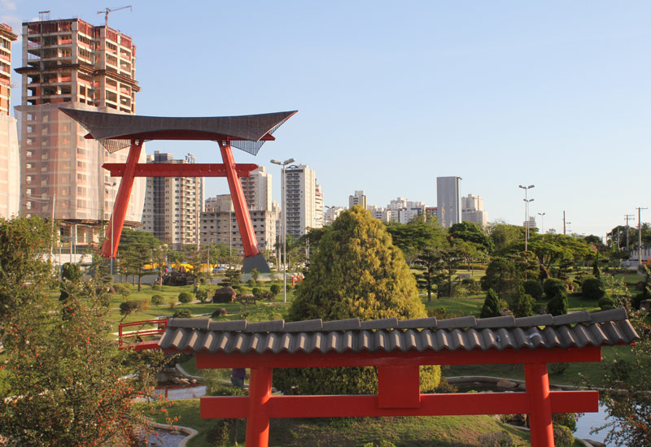

Pontos Turísticos de São José dos Campos
Uma visão de um dos principais pontos turísticos de SJC
Praça Riugi Kojima – Praça do Torii
A praça Riugi Kojima ,ou Praça do Torii, é uma das mais bonitas e mais simbólicas de São José dos Campos.

Monumento nikkei, em solo joseense, visa mostrar o reconhecimento à contribuição da comunidade japonesa no Vale
- Área de lazer
- Construída em 2008 para comemorar o centenário da chegada da colônia japonesa ao país
- Cerca de 9.000 metros quadrados
Clique para ver mais imagens da praça do torii
Voltar ao topo